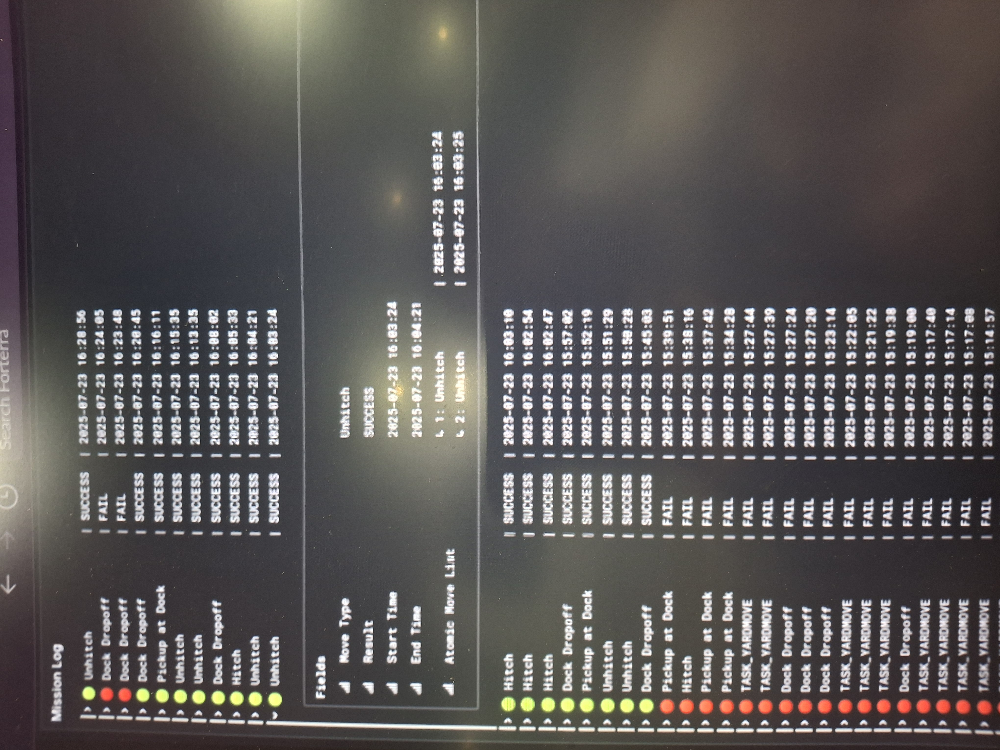

The problem
Autonomous vehicles produce a constant stream of telemetry, and a fleet is only as manageable as the team's view of that stream. The data has to land somewhere reliable, survive dropped connections and duplicate messages, and turn into numbers people check every day.
How it works
- Ingest. A Dockerized Python ETL service reads telemetry from the fleet as it streams in.
- Batch. Records are grouped into batches that retry on failure, so a dropped connection does not lose data.
- Store. Idempotent upserts write to PostgreSQL, so a message delivered twice is stored once.
- Visualize. Grafana dashboards query the database for uptime, autonomous versus manual miles, and mission success.

Why it matters for robot learning
Fleet learning starts with logging. Every policy trained on real-world data depends on a pipeline like this one: complete, deduplicated, and queryable. You cannot train on what you never recorded.
Result
The team's live view of fleet uptime, autonomous versus manual miles, and mission success.